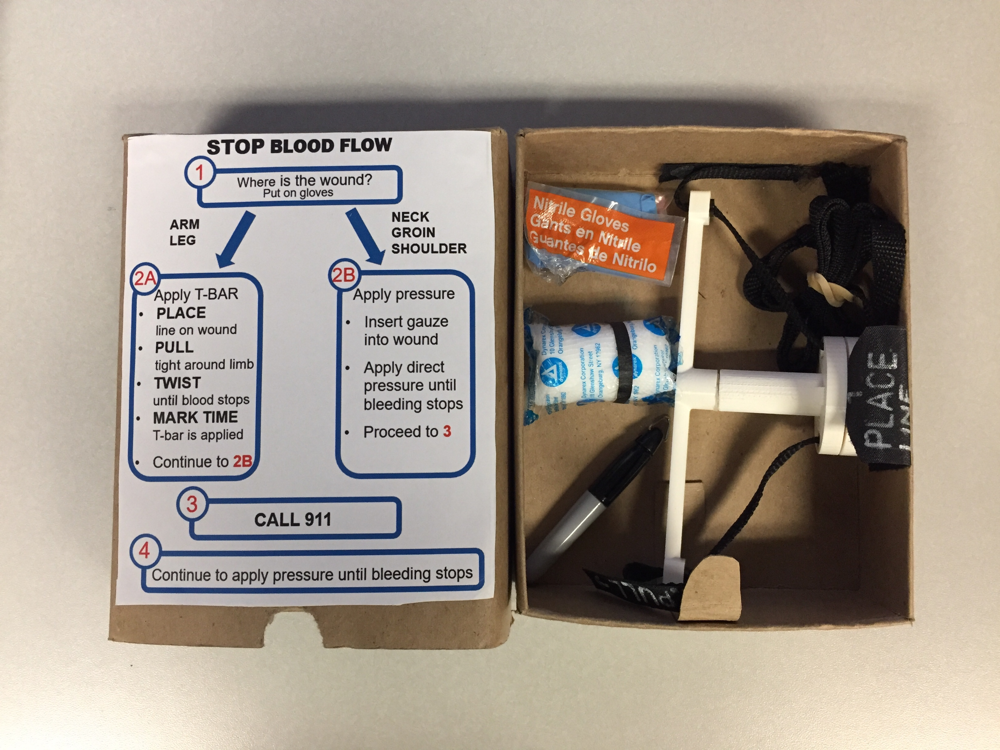

<div id="ajax-page" class="ajax-page-content">
    <div class="ajax-page-wrapper">
        <div class="ajax-page-nav">
            <div class="nav-item ajax-page-prev-next">
                <a class="ajax-page-load" href="portfolio-1.html"><i class="pe-7s-icon pe-7s-angle-left"></i></a>
                <a class="ajax-page-load" href="portfolio-3.html"><i class="pe-7s-icon pe-7s-angle-right"></i></a>
            </div>
            <div class="nav-item ajax-page-close-button">
                <a id="ajax-page-close-button" href="#"><i class="pe-7s-icon pe-7s-close"></i></a>
            </div>
        </div>

        <div class="ajax-page-title">
            <h1>Trauma Wound Kit and T-Bar Tourniquet</h1>
        </div>

        <div class="row">
            <div class="col-sm-7 col-md-7 portfolio-block">
                <div class="owl-carousel portfolio-page-carousel">
                    <div class="item">
                        
                    </div>
                    <div class="item">
                        
                    </div>
                    <div class="item">
                        
                    </div>
                </div>

                <div class="portfolio-page-video embed-responsive embed-responsive-16by9">
                  <iframe class="embed-responsive-item" src="https://player.vimeo.com/video/97102654?autoplay=0"></iframe>
                </div>

                <!--
                <div class="portfolio-page-image">
                    
                </div>
                -->

                <script type="text/javascript">
                    function customAjaxScroll() {
                        var windowWidth = $(window).width();
                        if (windowWidth > 991) {
                            // Custom Ajax Page Scroll
                            $("#ajax-page").mCustomScrollbar({
                                scrollInertia: 8,
                                documentTouchScroll: false
                            });
                        } else {
                            $("#ajax-page").mCustomScrollbar('destroy');
                        }
                    }

                    jQuery(document).ready(function($){

                        // Ajax Loaded Page Scroll
                        customAjaxScroll();


                        $('.portfolio-page-carousel').owlCarousel({
                            smartSpeed:1200,
                            items: 1,
                            loop: true,
                            dots: true,
                            nav: true,
                            navText: false,
                            margin: 10
                        });

                    });

                    jQuery(window).on('resize', function() {
                        customAjaxScroll();
                    });
                </script>
            </div>

            <div class="col-sm-5 col-md-5 portfolio-block">
                <!-- Project Description -->
                <div class="block-title">
                    <h3>Description</h3>
                </div>
                <ul class="project-general-info">
                    <li><p><i class="fa fa-user"></i> Christine Hickernell</p></li>
                    <li><p><i class="fa fa-calendar"></i> January-June 2018</p></li>
                </ul>

                <p class="text-justify">With the unexpected violence occurring in U.S public spaces, there is a push towards equipping civilians to provide preliminary medical care. For my design capstone project, our team designed a trauma wound kit that was fast and easy to use by untrained civilians.</p>
                <!-- /Project Description -->

                <!-- Skills -->
                <div class="tags-block">
                    <div class="block-title">
                        <h3>Skills</h3>
                    </div>
                    <ul class="tags">
                        <li><a>SolidWorks</a></li>
                        <li><a>Packaging Design</a></li>
                        <li><a>Rapid Prototyping/3D Printing</a></li>
                    </ul>
                </div>
                <!-- /Skills -->

                <!-- Defining the Problem -->
                <div class="define-problem">
                    <div class="block-title">
                        <h3>Defining the Problem</h3>
                    </div>
                    <p class="text-justify"> Although there are resources like tourniquets to provie trauma wound care, civilians are not able to properly use the products due to lack of training and intuitiveness.</p>
                     <p class="text-justify"> Andrew Webber, a West Point graduate and current NU law student, came to our team to have us design a wound kit that would be more financially and intuitively accessible to civilian first responders. The team decided to split the project into redesigning the tourniquet and the wound kit. </p>
                </div>
                <!-- /Defining the Problem -->

                <!-- Conceptual Design -->
                <div class="concept-design">
                    <div class="block-title">
                        <h3>Conceptual Design</h3>
                    </div>
                    <p class="text-justify"> Through benchmark testing, our team noticed that the tourniquet needed to be strapped tightly around the limb before twisting to get sufficient pressure to stop blood flow. The team divided the tourniquet operation into three simple steps:</p>
                        <ol> 
                            <li> PLACE </li>
                            <li> PULL </li> 
                            <li> TWIST </li>
                        </ol>
                     <p class="text-justify"> For the wound kit, I led the team in brainstorming the packaging design for the wound kit to clearly and effectively instruct a civilian in high stress situatinos. Key design features are: </p>
                        <ul> 
                            <li> <u> Red numbers: </u> the color pops out to help the civilian properly perform tasks </li>
                            <li> <u> A/B variations: </u> depending on the wound, the civilian needs to perform different tasks </li> 
                            <li> <u> Word hierarchy: </u> the smaller font indicates instructions that are less important but necessary </li>
                        </ul>
                </div>
                <!-- /Counceptual Design -->
            </div>
        </div>
    </div>
</div>
